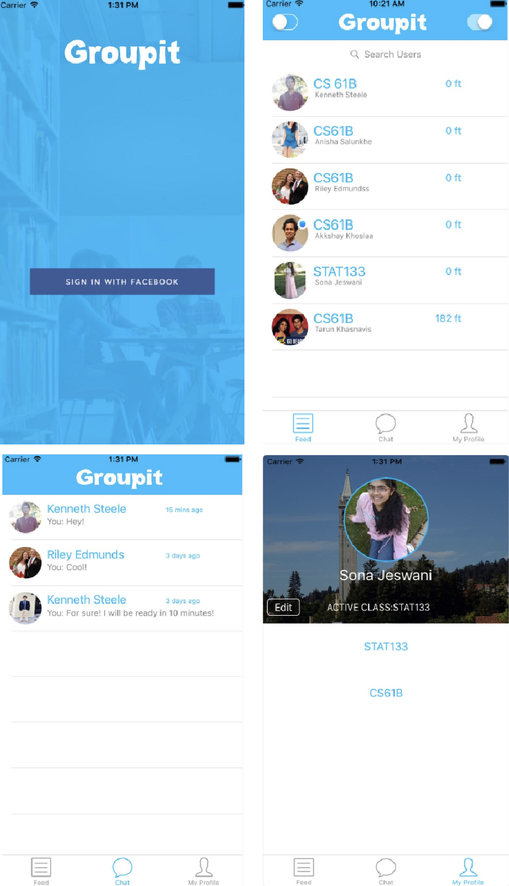
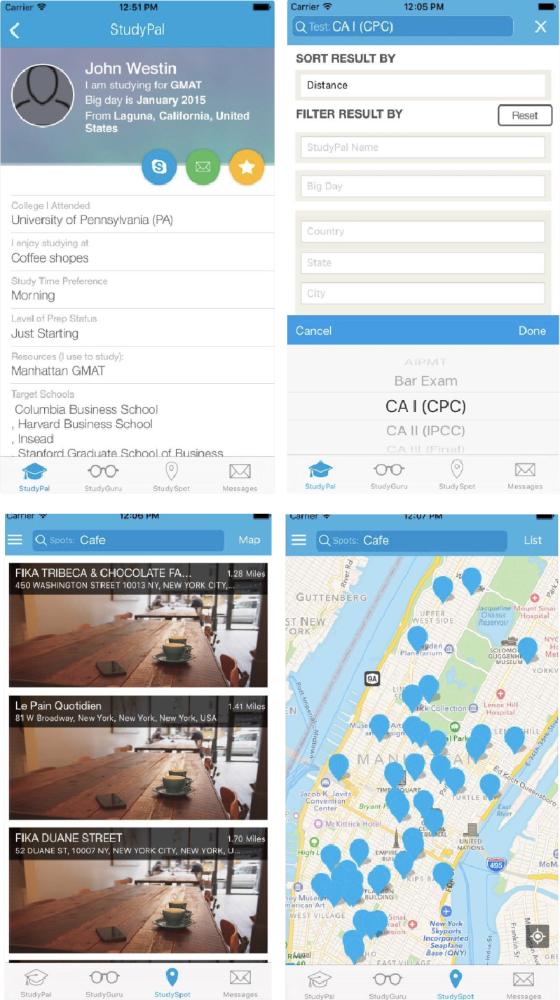

Overview
The Problem
Many students on college campuses enjoy coordinating with others on study groups for tests or difficult homeworks, but trying to coordinate and find group gatherings through social media such as Facebook or Groupme can be challenging. Students all over campus expressed their concerns for not being able to find these groups quickly, and many of these students questions prior to tests and assignments go unanswered because of the lack of an efficient way to communicate for help.
The Solution
Our team created Stumble, a mobile app that connects students to other students to form spontaneous study groups and class project teams. Stumble allows users to create profiles, input current classes, and create a bio to explain what they are searching for. With this app, students would now be able to find study groups quickly, and spend more time actually getting help.
My Roles
• Identify and brainstorm features backed by prior research
• Sketch first iteration of screens
• Design some prototyping screens
• Wire together screens for prototype in Marvel
• Conduct feedback sessions and usability tests with prototype
Methods Used
• Competitive Analysis
• Brainstorming and Ideation
• Sketching Design Alternatives
• Prototyping
• Heuristic Evaluation
• Observations & Restrospective Interviews
• Think-Aloud Evaluation
Design Process
Competitive Analysis
GroupIt
Familiarity of messaging system, like Groupme or Facebook Messenger
Ability to connect to Facebook, low effort in creating profile besides adding classes
Can only chat with one student at a time; no way to have group chats
Lists out all available students to choose from with no clear filter
Won’t know what student is looking to get out of a study group until you message them
StudyPal
Lots of options for customizing your profile
Filtering options for finding the correct person to match up with
List and map of study spots to help coordinate meetup locations
Can only chat with one student at a time
List and map of study spots are overwhelming and repetitive, takes away from the main purpose of meeting students instead of locations
Brainstorming and Ideation
After taking into consideration our competition and the details of what we wanted to include in Stumble, we brainstormed what we wanted our initial system to include.
• Sign Up / Log In
• View Profile
• Set Up Profile
• View Matches
• View Messages
• View Available Students
Sketching Design Alternatives
Our sketching consisted of digitally creating design alternatives for the different screens that we brainstormed. This would help inform our final design after feedback of the different options. Below are only a few of the screens that we sketched.
Prototyping
Our team took our design alternatives, and was able to come up with one system. We prototyped this system in Marvel to then use for our usability testing methods. The final prototype after all the changes can be found at the top of this page. However, we no longer have the prototype version before the changes were made. We ensured this prototype was coherent and testable, so we could use it for evaluation in the following methods.
Design Evaluation
Heuristic Evaluation
(conducted by our team)
1.
Visibility of System Status
• No words to tell what screen the is currently on besides the tab bar at the bottom
• Home screen shows user what class the user has currently filtered
• Edit profile indicates editing
• Messages show which group or individual the user is chatting with
2.
Match Between System and Real World
• No jargon that could be confusing to our target users
• Tabs go to pages that the user is expecting
3.
User Control and Freedom
• Cancel buttons throughout actions
• Confusion on edit page about if information had been saved or not - add save, edit, and cancel buttons
4.
Consistency and Standards
• Standard title “Stumble” at top of each page
• Same font, sizing, and color scheme used throughout
• Similar commands are in the same location on each screen and complete similar actions
• Determining when to use “Cancel” and when to use “Back” needs to be addressed for consistency
5.
Error Prevention
• No confirmation when a user signs up or logs in - could be a safety issue
• Adding “Remember me” to login page would be beneficial
• No features to prevent a user from filling in the wrong text field when signing up or editing profile
6.
Recognition Rather than Recall
• No “Remember me” options or autofills
• Having a dropdown menu to select classes instead of searching for a class helps prevent error, reducecognitive load, and save time
7.
Flexibility and Efficiency of Use
• No shortcuts on the app
• Default values for signing in and signing up based on autofill preferences
8.
Aestetic and Minimalistic Design
• Color scheme consistent with brand
• Only needed informaton is shown
• Only a few colors and fonts, keeps UI simple
• Only three core functionalities on the app that are self explanatory
9.
Help Users Recognize, Diagnose, and Recover from Errors
• Wrong username or password is handled
• If a user matches with someone incorrectly, the user can unmatch at any time
• No recognization for entering incorrect classes
10.
Provide Suitable Help and Documentation
• No current help documentation
• Need initial documentation for understanding how matching works
• Need documentation to learn how to combine people into group messages
Observations & Retrospective Interviews
Tasks performed:
1. Create an account/set up a profile
2. Find matches for a specific class (in this case, it was CSCI 1301)
3. Messaging a match
4. Create a group message
5. Change the password
Responses from questionaire after observation session:
Percentage rated 5 on a 1-5 scale for easiness of the tasks
80%
Account Setup
60%
Set Up Profile
60%
Find Matches
100%
Filter
80%
Chat
80%
Group Message
"I usually study alone, but Stumble would make forming a group very very easy, so I would likely use it at least a few times per semester.
"The design felt intuitive, and I very much liked the format of the various chats.
"Images in profiles. Turns it into something besides a study group assembling app.
"Feels like a dating app- might be used incorrectly
Takeaways
• Overall, participants thought the system was usable in the tasks conducted
• Some participants thought the large profile images made the system seem more like a dating app than a study group finder
• Setting up the profile and finding matches were the most difficult tasks to complete, need to iterate on these designs based on feedback
Think-Aloud Evaluation
5Participants
7Tasks Performed
Tasks performed:
1. Make an account on Stumble with all of your login information. After this, set up your account with all of your profile information, ensuring to include a profile picture. Once you have set up your account fully, go to the home screen. Then go to the profile settings screen to see where your information has been saved.
2. Find matches on Stumble. Your task is to find students you can match with in the CSCI 1301 class. Match or don’t match to your liking until you have looked at all potential matches (there should be 3).
3. Find more matches on Stumble. Your task is to now find students you an match with in the CSCI 4800 class. Start on Kelsie Belan’s profile. Match or don’t match to your liking until you have looked at all potential matches (there should be 3).
4. Message a match on Stumble. Find Kelsie Belan on your match list. Pretend to send a message to Kelsie.
5. Group matches into a group message on Stumble. You will want start a group message with Kelsie, Ben, Rosalie, and Roopal. After creating this group, then go to the group message and pretend to type a message in the group.
6. You’re scared someone might have hacked your account. Change your password so you can get a new one.
7. You forgot your password! Go through the system to get a new one.
Takeaways from think-aloud:
• Limitations for interactions on our prototype made some interactions difficult, including swiping on students, typing messages, selecting a profile picture, and creating group chats
• Some difficulty in identifying what the home screen even entailed - we can make this clearer.
• Need to make options more obvious. For example, some participants did not know that you could select a profile picture.
• Suggested addition of confirmation messages to ensure users have successfully completed certain actions.
• Overall the system is usable, but there are elements we can add or change to make the possibilities of interactions more clear.
Final
Future Considerations
Taking the feedback from our evaluation methods and implementing these items will be crucial for creating a more usable and friendly system. Not all items were implemented for the sake of the timeline, but our team was able to create action items from these evaluation methods whenever the next iteration of the design phase occurs.